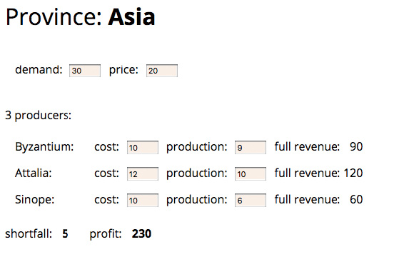

第 4 章 构筑测试体系
重构是很有价值的工具，但只有重构还不行。要正确地进行重构，前提是得有一套稳固的测试集合，以帮我发现难以避免的疏漏。即便有工具可以帮我自动完成一些重构，很多重构手法依然需要通过测试集合来保障。
我并不把这视为缺点。我发现，编写优良的测试程序，可以极大提高我的编程速度，即使不进行重构也一样如此。这让我很吃惊，也违反许多程序员的直觉，所以我有必要解释一下这个现象。
4.1 自测试代码的价值
如果你认真观察大多数程序员如何分配他们的时间，就会发现，他们编写代码的时间仅占所有时间中很少的一部分。有些时间用来决定下一步干什么，有些时间花在设计上，但是，花费在调试上的时间是最多的。我敢肯定，每一位读者一定都记得自己花数小时调试代码的经历——而且常常是通宵达旦。每个程序员都能讲出一个为了修复一个 bug 花费了一整天（甚至更长时间）的故事。修复 bug 通常是比较快的，但找出 bug 所在却是一场噩梦。当修复一个 bug 时，常常会引起另一个 bug，却在很久之后才会注意到它。那时，你又要花上大把时间去定位问题。
我走上“自测试代码”这条路，源于 1992 年 OOPSLA 大会上的一个演讲。有个人（我记得好像是 Bedarra 公司的 Dave Thomas）提到：“类应该包含它们自己的测试代码。”这让我决定，将测试代码和产品代码一起放到代码库中。
当时，我正在迭代方式开发一个软件，因此，我尝试在每个迭代结束后把测试代码加上。当时我的软件项目很小，我们每周进行一次迭代。所以，运行测试变得相当简单——尽管非常简单，但也非常枯燥。因为每个测试都把测试结果输出到控制台中，我必须逐一检查它们。我是一个很懒的人，所以总是在当下努力工作，以免日后有更多的活儿。我意识到，其实完全不必自己盯着屏幕检验测试输出的信息是否正确，而是让计算机来帮我做检查。我需要做的就是把我所期望的输出放到测试代码中，然后做一个对比就行了。于是，我只要运行所有测试用例，假如一切都没问题，屏幕上就只出现一个“OK”。现在我的代码都能够“自测试”了。
从此，运行测试就像执行编译一样简单。于是，我每次编译时都会运行测试。不久之后，我注意到自己的开发效率大大提高。我意识到，这是因为我没有花太多时间去测试的缘故。如果我不小心引入一个可被现有测试捕捉到的 bug，那么只要运行测试，它就会向我报告这个 bug。由于代码原本是可以正常运行的，所以我知道这个 bug 必定是在前一次运行测试后修改代码引入的。由于我频繁地运行测试，每次测试都在不久之前，因此我知道 bug 的源头就是我刚刚写下的代码。因为代码量很少，我对它也记忆犹新，所以就能轻松找出 bug。从前需要一小时甚至更多时间才能找到的 bug，现在最多只要几分钟就找到了。之所以能够拥有如此强大的 bug 侦测能力，不仅仅是因为我的代码能够自测试，也得益于我频繁地运行它们。
Tip
确保所有测试都完全自动化，让它们检查自己的测试结果。
注意到这一点后，我对测试的积极性更高了。我不再等待每次迭代结尾时再增加测试，而是只要写好一点功能，就立即添加它们。每天我都会添加一些新功能，同时也添加相应的测试。这样，我很少花超过几分钟的时间来追查回归错误。
从我最早的试验开始到现在为止，编写和组织自动化测试的工具已经有了长足的发展。1997 年，Kent Beck 从瑞士飞往亚特兰大去参加当年的 OOPSLA 会议，在飞机上他与 Erich Gamma 结对，把他为 Smalltalk 撰写的测试框架移植到了 Java 上。由此诞生的 JUnit 框架在测试领域影响力非凡，也在不同的编程语言中催生了很多类似的工具[mf-xunit]。
Tip
一套测试就是一个强大的 bug 侦测器，能够大大缩减查找 bug 所需的时间。
我得承认，说服别人也这么做并不容易。编写测试程序，意味着要写很多额外的代码。除非你确实体会到这种方法是如何提升编程速度的，否则自测试似乎就没什么意义。很多人根本没学过如何编写测试程序，甚至根本没考虑过测试，这对于编写自测试也很不利。如果测试需要手动运行，那的确是令人烦闷。但是，如果测试可以自动运行，编写测试代码就会真的很有趣。
事实上，撰写测试代码的最好时机是在开始动手编码之前。当我需要添加特性时，我会先编写相应的测试代码。听起来离经叛道，其实不然。编写测试代码其实就是在问自己：为了添加这个功能，我需要实现些什么？编写测试代码还能帮我把注意力集中于接口而非实现（这永远是一件好事）。预先写好的测试代码也为我的工作安上一个明确的结束标志：一旦测试代码正常运行，工作就可以结束了。
Kent Beck 将这种先写测试的习惯提炼成一门技艺，叫测试驱动开发（Test-Driven Development，TDD）[mf-tdd]。测试驱动开发的编程方式依赖于下面这个短循环：先编写一个（失败的）测试，编写代码使测试通过，然后进行重构以保证代码整洁。这个“测试、编码、重构”的循环应该在每个小时内都完成很多次。这种良好的节奏感可使编程工作以更加高效、有条不紊的方式开展。我就不在这里再做更深入的介绍，但我自己确实经常使用，也非常建议你试一试。
大道理先放在一边。尽管我相信每个人都可以从编写自测试代码中收益，但这并不是本书的重点。本书谈的是重构，而重构需要测试。如果你想重构，就必须编写测试。本章会带你入门，教你如何在 JavaScript 中编写简单的测试，但它不是一本专门讲测试的书，所以我不想讲得太细。但我发现，少许测试往往就足以带来惊人的收益。
和本书其他内容一样，我以示例来介绍测试手法。开发软件的时候，我一边写代码，一边写测试。但有时我也需要重构一些没有测试的代码。在重构之前，我得先改造这些代码，使其能够自测试才行。
4.2 待测试的示例代码
这里我展示了一份有待测试的代码。这份代码来自一个简单的应用，用于支持用户查看并调整生产计划。它的（略显粗糙的）界面长得像下面这张图所示的这样。

每个行省（province）都有一份生产计划，计划中包含需求量（demand）和采购价格（price）。每个行省都有一些生产商（producer），他们各自以不同的成本价（cost）供应一定数量的产品。界面上还会显示，当商家售出所有的商品时，他们可以获得的总收入（full revenue）。页面底部展示了该区域的产品缺额（需求量减去总产量）和总利润（profit）。用户可以在界面上修改需求量及采购价格，以及不同生产商的产量（production）和成本价，以观察缺额和总利润的变化。用户在界面上修改任何数值时，其他的数值都会同时得到更新。
这里我展示了一个用户界面，是为了让你了解该应用的使用方式，但我只会聚焦于软件的业务逻辑部分，也就是那些计算利润和缺额的类，而非那些生成 HTML 或监听页面字段更新的代码。本章只是先带你走进自测试代码世界的大门，因而最好是从最简单的例子开始，也就是那些不涉及用户界面、持久化或外部服务交互的代码。这种隔离的思路其实在任何场景下都适用：一旦业务逻辑的部分开始变复杂，我就会把它与 UI 分离开，以便能更好地理解和测试它。
这块业务逻辑代码涉及两个类：一个代表了单个生产商（Producer），另一个用来描述一个行省（Province）。Province 类的构造函数接收一个 JavaScript 对象，这个对象的内容我们可以想象是由一个 JSON 文件提供的。
下面的代码能从 JSON 文件中构造出一个行省对象。
class Province...
constructor(doc) {
this._name = doc.name;
this._producers = [];
this._totalProduction = 0;
this._demand = doc.demand;
this._price = doc.price;
doc.producers.forEach(d => this.addProducer(new Producer(this, d)));
}
addProducer(arg) {
this._producers.push(arg);
this._totalProduction += arg.production;
}
下面的函数会创建可用的 JSON 数据，我可以用它的返回值来构造一个行省对象，并拿这个对象来做测试。
顶层作用域...
function sampleProvinceData() {
return {
name: "Asia",
producers: [
{ name: "Byzantium", cost: 10, production: 9 },
{ name: "Attalia", cost: 12, production: 10 },
{ name: "Sinope", cost: 10, production: 6 },
],
demand: 30,
price: 20,
};
}
行省类中有许多设值函数和取值函数，它们用于获取各类数据的值。
class Province...
get name() {return this._name;}
get producers() {return this._producers.slice();}
get totalProduction() {return this._totalProduction;}
set totalProduction(arg) {this._totalProduction = arg;}
get demand() {return this._demand;}
set demand(arg) {this._demand = parseInt(arg);}
get price() {return this._price;}
set price(arg) {this._price = parseInt(arg);}
设值函数会被 UI 端调用，接收一个包含数值的字符串。我需要将它们转换成数值，以便在后续的计算中使用。
代表生产商的 Producer 类则基本只是一个存放数据的容器。
class Producer...
constructor(aProvince, data) {
this._province = aProvince;
this._cost = data.cost;
this._name = data.name;
this._production = data.production || 0;
}
get name() {return this._name;}
get cost() {return this._cost;}
set cost(arg) {this._cost = parseInt(arg);}
get production() {return this._production;}
set production(amountStr) {
const amount = parseInt(amountStr);
const newProduction = Number.isNaN(amount) ? 0 : amount;
this._province.totalProduction += newProduction - this._production;
this._production = newProduction;
}
在设值函数 production 中更新派生数据的方式有点丑陋，每当看到这种代码，我便想通过重构帮它改头换面。但在重构之前，我必须记得先为它添加测试。
缺额的计算逻辑也很简单。
class Province...
get shortfall() {
return this._demand - this.totalProduction;
}
计算利润的逻辑则要相对复杂一些。
class Province...
get profit() {
return this.demandValue - this.demandCost;
}
get demandCost() {
let remainingDemand = this.demand;
let result = 0;
this.producers
.sort((a,b) => a.cost - b.cost)
.forEach(p => {
const contribution = Math.min(remainingDemand, p.production);
remainingDemand -= contribution;
result += contribution * p.cost;
});
return result;
}
get demandValue() {
return this.satisfiedDemand * this.price;
}
get satisfiedDemand() {
return Math.min(this._demand, this.totalProduction);
}
4.3 第一个测试
开始测试这份代码前，我需要一个测试框架。JavaScript 世界里这样的框架有很多，这里我选用的是使用度和声誉都还不错的 Mocha。我不打算全面讲解框架的使用，而只会用它写一些测试作为例子。看完之后，你应该能轻松地学会用别的框架来编写类似的测试。
以下是为缺额计算过程编写的一个简单的测试：
describe("province", function () {
it("shortfall", function () {
const asia = new Province(sampleProvinceData());
assert.equal(asia.shortfall, 5);
});
});
Mocha 框架组织测试代码的方式是将其分组，每一组下包含一套相关的测试。测试需要写在一个 it 块中。对于这个简单的例子，测试包含了两个步骤。第一步设置好一些测试夹具（fixture），也就是测试所需要的数据和对象等（就本例而言是一个加载好了的行省对象）；第二步则是验证测试夹具是否具备某些特征（就本例而言则是验证算出的缺额应该是期望的值）。
Tip
不同开发者在 describe 和 it 块里撰写的描述信息各有不同。有的人会写一个描述性的句子解释测试的内容，也有人什么都不写，认为所谓描述性的句子跟注释一样，不外乎是重复代码已经表达的东西。我个人不喜欢多写，只要测试失败时足以识别出对应的测试就够了。
如果我在 NodeJS 的控制台下运行这个测试，那么其输出看起来是这样：
''''''''''''''
1 passing (61ms)
它的反馈极其简洁，只包含了已运行的测试数量以及测试通过的数量。
当我为类似的既有代码编写测试时，发现一切正常工作固然是好，但我天然持怀疑精神。特别是有很多测试在运行时，我总会担心测试没有按我期望的方式检查结果，从而没法在实际出错的时候抓到 bug。因此编写测试时，我想看到每个测试都至少失败一遍。我最爱的方式莫过于在代码中暂时引入一个错误，像这样：
Tip
总是确保测试不该通过时真的会失败。
class Province...
get shortfall() {
return this._demand - this.totalProduction * 2;
}
现在控制台的输出就有所改变了：
!
0 passing (72ms)
1 failing
1) province shortfall:
AssertionError: expected -20 to equal 5
at Context.<anonymous> (src/tester.js:10:12)
框架会报告哪个测试失败了，并给出失败的根本原因——这里是因为实际算出的值与期望的值不相符。于是我总算见到有什么东西失败了，并且还能马上看到是哪个测试失败，获得一些出错的线索（这个例子中，我还能确认这就是我引入的那个错误）。
一个真实的系统可能拥有数千个测试。好的测试框架应该能帮我简单快速地运行这些测试，一旦出错，我能马上看到。尽管这种反馈非常简单，但对自测试代码来说却尤为重要。工作时我会非常频繁地运行测试，要么是检验新代码的进展，要么是检查重构过程是否出错。
Tip
频繁地运行测试。对于你正在处理的代码，与其对应的测试至少每隔几分钟就要运行一次，每天至少运行一次所有的测试。
Mocha 框架允许使用不同的库（它称之为断言库）来验证测试的正确性。JavaScript 世界的断言库，连在一起都可以绕地球一周了，当你读到这里时，可能有些仍然还没过时。我现在使用的库是 Chai，它可以支持我编写不同类型的断言，比如“assert”风格的：
describe("province", function () {
it("shortfall", function () {
const asia = new Province(sampleProvinceData());
assert.equal(asia.shortfall, 5);
});
});
或者是“expect”风格的：
describe("province", function () {
it("shortfall", function () {
const asia = new Province(sampleProvinceData());
expect(asia.shortfall).equal(5);
});
});
一般来讲我更倾向于使用 assert 风格的断言，但使用 JavaScript 时我倒是更常使用 expect 的风格。
环境不同，运行测试的方式也不同。使用 Java 编程时，我使用 IDE 的图形化测试运行界面。它有一个进度条，所有测试都通过时就会显示绿色；只要有任何测试失败，它就会变成红色。我的同事们经常使用“绿色条”和“红色条”来指代测试的状态。我可能会讲“看到红条时永远不许进行重构”，意思是：测试集合中还有失败的测试时就不应该先去重构。有时我也会讲“回退到绿条”，表示你应该撤销最近一次更改，将测试恢复到上一次全部通过的状态（通常是切回到版本控制的最近一次提交点）。
图形化测试界面的确很棒，但并不是必需的。我通常会在 Emacs 中配置一个运行测试的快捷键，然后在编译窗口中观察纯文本的反馈。要点在于，我必须能快速地知道测试是否全部都通过了。
4.4 再添加一个测试
现在，我将继续添加更多测试。我遵循的风格是：观察被测试类应该做的所有事情，然后对这个类的每个行为进行测试，包括各种可能使它发生异常的边界条件。这不同于某些程序员提倡的“测试所有 public 函数”的风格。记住，测试应该是一种风险驱动的行为，我测试的目标是希望找出现在或未来可能出现的 bug。所以我不会去测试那些仅仅读或写一个字段的访问函数，因为它们太简单了，不太可能出错。
这一点很重要，因为如果尝试撰写过多测试，结果往往反而导致测试不充分。事实上，即使我只做一点点测试，也从中获益良多。测试的重点应该是那些我最担心出错的部分，这样就能从测试工作中得到最大利益。
接下来，我的目光落到了代码的另一个主要输出上，也就是总利润的计算。我同样可以在一开始的测试夹具上，对总利润做一个基本的测试。
Tip
编写未臻完善的测试并经常运行，好过对完美测试的无尽等待。
describe("province", function () {
it("shortfall", function () {
const asia = new Province(sampleProvinceData());
expect(asia.shortfall).equal(5);
});
it("profit", function () {
const asia = new Province(sampleProvinceData());
expect(asia.profit).equal(230);
});
});
这是最终写出来的测试，但我是怎么写出它来的呢？首先我随便给测试的期望值写了一个数，然后运行测试，将程序产生的实际值（230）填回去。当然，我也可以自己手动计算，不过，既然现在的代码是能正常运行的，我就选择暂时相信它。测试可以正常工作后，我又故技重施，在利润的计算过程插入一个假的乘以 2 逻辑来破坏测试。如我所料，测试会失败，这时我才满意地将插入的假逻辑恢复过来。这个模式是我为既有代码添加测试时最常用的方法：先随便填写一个期望值，再用程序产生的真实值来替换它，然后引入一个错误，最后恢复错误。
这个测试随即产生了一些重复代码——它们都在第一行里初始化了同一个测试夹具。正如我对一般的重复代码抱持怀疑，测试代码中的重复同样令我心生疑惑，因此我要试着将它们提到一处公共的地方，以此来消灭重复。一种方案就是把常量提取到外层作用域里。
describe("province", function () {
const asia = new Province(sampleProvinceData()); // DON'T DO THIS
it("shortfall", function () {
expect(asia.shortfall).equal(5);
});
it("profit", function () {
expect(asia.profit).equal(230);
});
});
但正如代码注释所说的，我从不这样做。这样做的确能解决一时的问题，但共享测试夹具会使测试间产生交互，这是滋生 bug 的温床——还是你写测试时能遇见的最恶心的 bug 之一。使用了 JavaScript 中的 const 关键字只表明 asia 的引用不可修改，不表明对象的内容也不可修改。如果未来有一个测试改变了这个共享对象，测试就可能时不时失败，因为测试之间会通过共享夹具产生交互，而测试的结果就会受测试运行次序的影响。测试结果的这种不确定性，往往使你陷入漫长而又艰难的调试，严重时甚至可能令你对测试体系的信心产生动摇。因此，我比较推荐采取下面的做法：
describe("province", function () {
let asia;
beforeEach(function () {
asia = new Province(sampleProvinceData());
});
it("shortfall", function () {
expect(asia.shortfall).equal(5);
});
it("profit", function () {
expect(asia.profit).equal(230);
});
});
beforeEach 子句会在每个测试之前运行一遍，将 asia 变量清空，每次都给它赋一个新的值。这样我就能在每个测试开始前，为它们各自构建一套新的测试夹具，这保证了测试的独立性，避免了可能带来麻烦的不确定性。
对于这样的建议，有人可能会担心，每次创建一个崭新的测试夹具会拖慢测试的运行速度。大多数时候，时间上的差别几乎无法察觉。如果运行速度真的成为问题，我也可以考虑共享测试夹具，但这样我就得非常小心，确保没有测试会去更改它。如果我能够确定测试夹具是百分之百不可变的，那么也可以共享它。但我的本能反应还是要使用独立的测试夹具，可能因为我过去尝过了太多共享测试夹具带来的苦果。
既然我在 beforeEach 里运行的代码会对每个测试生效，那么为何不直接把它挪到每个 it 块里呢？让所有测试共享一段测试夹具代码的原因，是为了使我对公用的夹具代码感到熟悉，从而将眼光聚焦于每个测试的不同之处。beforeEach 块旨在告诉读者，我使用了同一套标准夹具。你可以接着阅读 describe 块里的所有测试，并知道它们都是基于同样的数据展开测试的。
4.5 修改测试夹具
加载完测试夹具后，我编写了一些测试来探查它的一些特性。但在实际应用中，该夹具可能会被频繁更新，因为用户可能在界面上修改数值。
大多数更新都是通过设值函数完成的，我一般也不会测试这些方法，因为它们不太可能出什么 bug。不过 Producer 类中的产量（production）字段，其设值函数行为比较复杂，我觉得它倒是值得一测。
describe('province'...
it('change production', function() {
asia.producers[0].production = 20;
expect(asia.shortfall).equal(-6);
expect(asia.profit).equal(292);
});
这是一个常见的测试模式。我拿到 beforeEach 配置好的初始标准夹具，然后对该夹具进行必要的检查，最后验证它是否表现出我期望的行为。如果你读过测试相关的资料，就会经常听到各种类似的术语，比如配置-检查-验证（setup-exercise-verify）、given-when-then 或者准备-行为-断言（arrange-act-assert）等。有时你能在一个测试里见到所有的步骤，有时那些早期的公用阶段会被提到一些标准的配置步骤里，诸如 beforeEach 等。
Tip
（其实还有第四个阶段，只是不那么明显，一般很少提及，那就是拆除阶段。此阶段可将测试夹具移除，以确保不同测试之间不会产生交互。因为我是在 beforeEach 中配置好数据的，所以测试框架会默认在不同的测试间将我的测试夹具移除，相当于我自动享受了拆除阶段带来的便利。多数测试文献的作者对拆除阶段一笔带过，这可以理解，因为多数时候我们可以忽略它。但有时因为创建缓慢等原因，我们会在不同的测试间共享测试夹具，此时，显式地声明一个拆除操作就是很重要的。）
在这个测试中，我在一个 it 语句里验证了两个不同的特性。作为一个基本规则，一个 it 语句中最好只有一个验证语句，否则测试可能在进行第一个验证时就失败，这通常会掩盖一些重要的错误信息，不利于你了解测试失败的原因。不过，在上面的场景中，我觉得两个断言本身关系非常紧密，写在同一个测试中问题不大。如果稍后需要将它们分离到不同的 it 语句中，我可以到时再做。
4.6 探测边界条件
到目前为止我的测试都聚焦于正常的行为上，这通常也被称为“正常路径”（happy path），它指的是一切工作正常、用户使用方式也最符合规范的那种场景。同时，把测试推到这些条件的边界处也是不错的实践，这可以检查操作出错时软件的表现。
无论何时，当我拿到一个集合（比如说此例中的生产商集合）时，我总想看看集合为空时会发生什么。
describe('no producers', function() {
let noProducers;
beforeEach(function() {
const data = {
name: "No proudcers",
producers: [],
demand: 30,
price: 20
};
noProducers = new Province(data);
});
it('shortfall', function() {
expect(noProducers.shortfall).equal(30);
});
it('profit', function() {
expect(noProducers.profit).equal(0);
});
如果拿到的是数值类型，0 会是不错的边界条件：
describe('province'...
it('zero demand', function() {
asia.demand = 0;
expect(asia.shortfall).equal(-25);
expect(asia.profit).equal(0);
});
负值同样值得一试：
describe('province'...
it('negative demand', function() {
asia.demand = -1;
expect(asia.shortfall).equal(-26);
expect(asia.profit).equal(-10);
});
测试到这里，我不禁有一个想法：对于这个业务领域来讲，提供一个负的需求值，并算出一个负的利润值意义何在？最小的需求量不应该是 0 吗？或许，设值方法需要对负值有些不同的行为，比如抛出错误，或总是将值设置为 0。这些问题都很好，编写这样的测试能帮助我思考代码本应如何应对边界场景。
设值函数接收的字符串是从 UI 上的字段读来的，它已经被限制为只能填入数字，但仍然有可能是空字符串，因此同样需要测试来保证代码对空字符串的处理方式符合我的期望。
Tip
考虑可能出错的边界条件，把测试火力集中在那儿。
describe('province'...
it('empty string demand', function() {
asia.demand = "";
expect(asia.shortfall).NaN;
expect(asia.profit).NaN;
});
可以看到，我在这里扮演“程序公敌”的角色。我积极思考如何破坏代码。我发现这种思维能够提高生产力，并且很有趣——它纵容了我内心中比较促狭的那一部分。
这个测试结果很有意思：
describe('string for producers', function() {
it('', function() {
const data = {
name: "String producers",
producers: "",
demand: 30,
price: 20
};
const prov = new Province(data);
expect(prov.shortfall).equal(0);
});
它并不是抛出一个简单的错误说缺额的值不为 0。控制台的报错输出实际如下：
'''''''''!
9 passing (74ms)
1 failing
1) string for producers :
TypeError: doc.producers.forEach is not a function
at new Province (src/main.js:22:19)
at Context.<anonymous> (src/tester.js:86:18)
Mocha 把这也当作测试失败（failure），但多数测试框架会把它当作一个错误（error），并与正常的测试失败区分开。“失败”指的是在验证阶段中，实际值与验证语句提供的期望值不相等；而这里的“错误”则是另一码事，它是在更早的阶段前抛出的异常（这里是在配置阶段）。它更像代码的作者没有预料到的一种异常场景，因此我们不幸地得到了每个 JavaScript 程序员都很熟悉的错误（“...is not a function”）。
那么代码应该如何处理这种场景呢？一种思路是，对错误进行处理并给出更好的出错响应，比如说抛出更有意义的错误信息，或是直接将 producers 字段设置为一个空数组（最好还能再记录一行日志信息）。但维持现状不做处理也说得通，也许该输入对象是由可信的数据源提供的，比如同个代码库的另一部分。在同一代码库的不同模块之间加入太多的检查往往会导致重复的验证代码，它带来的好处通常不抵害处，特别是你添加的验证可能在其他地方早已做过。但如果该输入对象是由一个外部服务所提供，比如一个返回 JSON 数据的请求，那么校验和测试就显得必要了。不论如何，为边界条件添加测试总能引发这样的思考。
如果这样的测试是在重构前写出的，那么我很可能还会删掉它。重构应该保证可观测的行为不发生改变，而类似的错误已经超越可观测的范畴。删掉这条测试，我就不用担心重构过程改变了代码对这个边界条件的处理方式。
Tip
如果这个错误会导致脏数据在应用中到处传递，或是产生一些很难调试的失败，我可能会用引入断言（302）手法，使代码不满足预设条件时快速失败。我不会为这样的失败断言添加测试，它们本身就是一种测试的形式。
什么时候应该停下来？我相信这样的话你已经听过很多次：“任何测试都不能证明一个程序没有 bug。”确实如此，但这并不影响“测试可以提高编程速度”。我曾经见过好几种测试规则建议，其目的都是保证你能够测试所有情况的一切组合。这些东西值得一看，但是别让它们影响你。当测试数量达到一定程度之后，继续增加测试带来的边际效用会递减；如果试图编写太多测试，你也可能因为工作量太大而气馁，最后什么都写不成。你应该把测试集中在可能出错的地方。观察代码，看哪儿变得复杂；观察函数，思考哪些地方可能出错。是的，你的测试不可能找出所有 bug，但一旦进行重构，你可以更好地理解整个程序，从而找到更多 bug。虽然在开始重构之前我会确保有一个测试套件存在，但前进途中我总会加入更多测试。
Tip
不要因为测试无法捕捉所有的 bug 就不写测试，因为测试的确可以捕捉到大多数 bug。
4.7 测试远不止如此
本章我想讨论的东西到这里就差不多了，毕竟这是一本关于重构而不是测试的书。但测试本身是一个很重要的话题，它既是重构所必要的基础保障，本身也是一个有价值的工具。自本书第 1 版以来，我很高兴看到重构作为一项编程实践在逐步发展，但我更高兴见到业界对测试的态度也在发生转变。之前，测试更多被认为是另一个独立的（所需专业技能也较少的）团队的责任，但现在它愈发成为任何一个软件开发者所必备的技能。如今一个架构的好坏，很大程度要取决于它的可测试性，这是一个好的行业趋势。
这里我展示的测试都属于单元测试，它们负责测试一块小的代码单元，运行足够快速。它们是自测试代码的支柱，是一个系统中占绝大多数的测试类型。同时也有其他种类的测试存在，有的专注于组件之间的集成，有的会检验软件跨越几个层级的运行结果，有的用于查找性能问题，不一而足。（而且，同行们对于如何归类测试的争论，恐怕比繁多的测试种类本身还要多。）
与编程的许多方面类似，测试也是一种迭代式的活动。除非你技能非常纯熟，或者非常幸运，否则你很难第一次就把测试写对。我发觉我持续地在测试集上工作，就与我在主代码库上的工作一样多。很自然，这意味着我在增加新特性时也要同时添加测试，有时还需要回顾已有的测试：它们足够清晰吗？我需要重构它们，以帮助我更好地理解吗？我拥有的测试是有价值的吗？一个值得养成的好习惯是，每当你遇见一个 bug，先写一个测试来清楚地复现它。仅当测试通过时，才视为 bug 修完。只要测试存在一天，我就知道这个错误永远不会再复现。这个 bug 和对应的测试也会提醒我思考：测试集里是否还有这样不被阳光照耀到的犄角旮旯？
一个常见的问题是，“要写多少测试才算足够？”这个问题没有很好的衡量标准。有些人拥护以测试覆盖率[mf-tc]作为指标，但测试覆盖率的分析只能识别出那些未被测试覆盖到的代码，而不能用来衡量一个测试集的质量高低。
Tip
每当你收到 bug 报告，请先写一个单元测试来暴露这个 bug。
一个测试集是否足够好，最好的衡量标准其实是主观的，请你试问自己：如果有人在代码里引入了一个缺陷，你有多大的自信它能被测试集揪出来？这种信心难以被定量分析，盲目自信不应该被计算在内，但自测试代码的全部目标，就是要帮你获得此种信心。如果我重构完代码，看见全部变绿的测试就可以十分自信没有引入额外的 bug，这样，我就可以高兴地说，我已经有了一套足够好的测试。
测试同样可能过犹不及。测试写得太多的一个征兆是，相比要改的代码，我在改动测试上花费了更多的时间——并且我能感到测试就在拖慢我。不过尽管过度测试时有发生，相比测试不足的情况还是稀少得多。